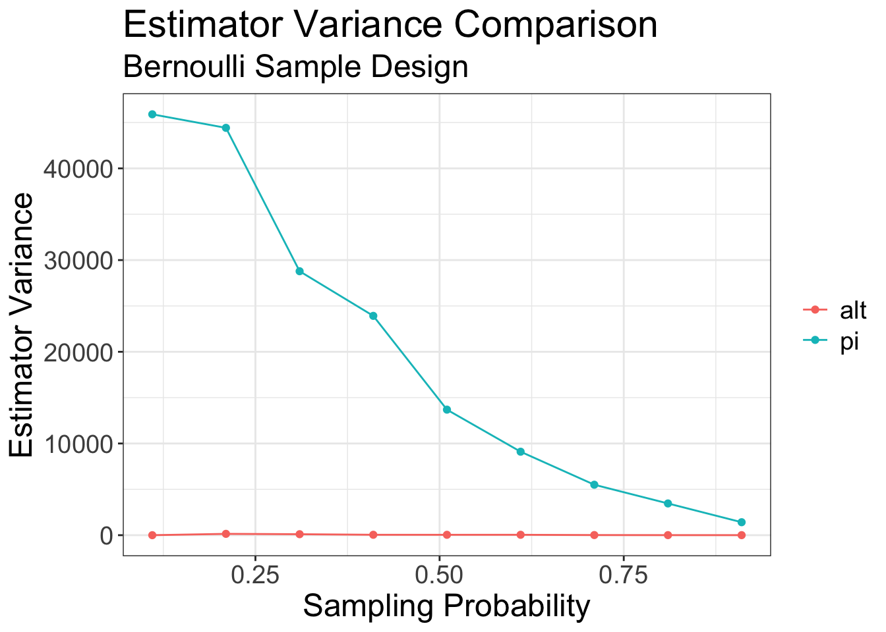
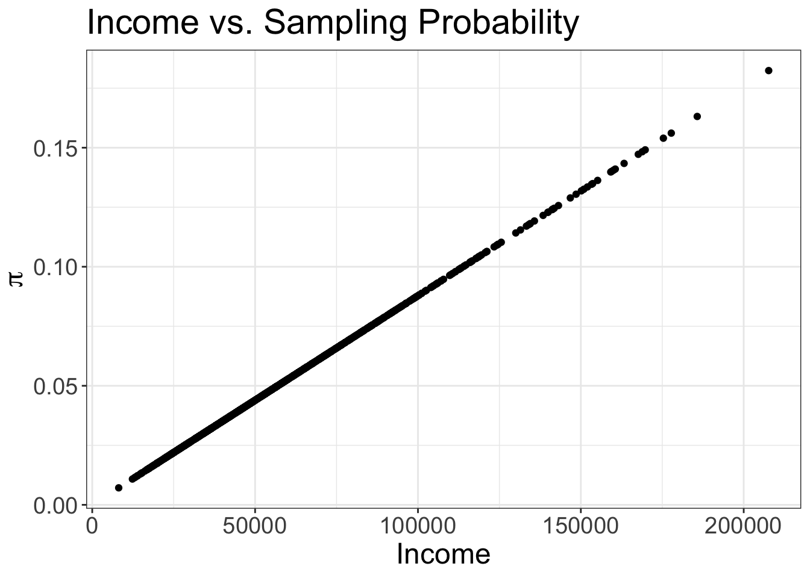

bernoulli_sample <- function(population_data, pi) {
N <- length(population_data)
return(population_data[runif(n = N) <= pi])
}Preface
After writing up my notes on Thomas Lumley’s excellent book detailing how to use his survey methods software package and some of the associated theory, I found myself wanting to cover the subject further. In particular, I found myself reading Lumley’s main theoretical reference for his book, (Särndal, Swensson, and Wretman 2003), and enjoying it immensely.
Consequently this post will be the first in a series breaking down more advanced topics in design based inference drawing from (Särndal, Swensson, and Wretman 2003) and other sources. In particular, where my notes from Lumley’s text focused more on how to analyze samples, this post will focus on different ways to draw samples.
Sampling Design
In this post I’ll provide an overview of several different types of sampling designs one might encounter in design based inference. The inferential goal to start will simply be descriptive, i.e. what is the mean or total for some variable in a population, though its worth noting causal inference and experimental design share many of the same motivations and ideas.
While sampling designs are defined by the probability distribution of drawing any given sample, the implementation of any algorithm that produces the desired sampling distribution is another matter that can have implications on how easily one can draw a sample in practice — this is especially true in the world of big data.
Details here become complicated depending on what’s being measured and the infrastructure in place determining how easily samples can be drawn and/or measured. I’ll address some of these issues and refer to my own experience in working in this area to highlight what I think are the best strategies.
Element Sampling Designs
(Särndal, Swensson, and Wretman 2003) provide a formal definition for the technical requirements of a sampling design but in this post, it’ll suffice to say that a sampling design provides some procedure by which elements are drawn probabilistically from a population. The use of the word “probabilistically” here is key, as it denotes that the realized sample was one of possible samples and grounds our inference as a method that can provided unbiased estimators with quantifiable uncertainty. A further distinction worth noting here is that we are sampling the elements of the population themselves upon which we’ll construct our measurement. This distinction is worth making because more complex survey designs will sample clusters of elements in some way before the elements themselves to reduce the overall cost of the design and/or improve efficiency of estimate’s precision.
(Särndal, Swensson, and Wretman 2003) lists the following six element sampling designs in chapter 3:
- Bernoulli Sampling
- Simple random sampling with(out) replacement
- Systematic Sampling
- Poisson Sampling
- Probability proportional to size sampling with(out) replacement
- Stratified Sampling.
Each of these designs have various advantages and disadvantages that correspond to their properties for estimating a population quantity via some estimator. For example, when (2) and (5) are used to sample with replacement there’s an increase in the variance of the estimator because there’s a possibility — large or small depending on the population size — that duplicate samples are drawn. For this reason, I’ll omit these from my current discussion.
For those with training in a conventional statistics curriculum, it is worth highlighting how in the absence of a specified model we do not have the typical theoretical tools — like the rao-blackwell theorem for example — to guarantee the efficiency of our estimators. Instead, we have to analyze the design in place of the model to understand how different sampling designs, coupled with a specified estimator, may be better or worse at estimating the quantity of interest. In general, I’ll focus on comparing estimators to the Horvitz Thompson (HTE) or \pi estimator, as (Särndal, Swensson, and Wretman 2003) refers to it. To more explicitly define these estimators, I’ll introduce some basic notation.
Notation
I’ll assume that every element in the population can be drawn into the sample and subsequently measured. Indexing each element as i=1,...,N, so that there are N total elements in the population, the measurement on each subject is y_i which can have any support - discrete or continuous. The typical target of estimation is the population total, T = \sum_{i=1}^{N} y_i, or mean \mu = \frac{T}{N}.
The sampling design defines how we sample the elements of the population. This structure is in part encoded by their sampling probabilities, \pi_i, which are defined for each element. The sampling probability represents, as its name implies, the probability that the element is included in the sample, \mathrm{S}, from the population; P(i \in \mathrm{S}) = \pi_i:
The \pi estimator, is constructed by weighting each measured element in \mathrm{S}, where |\mathrm{S}| = n < N, according to the inverse of its sampling probability.
\hat{T}_{\pi} = \sum_{i=1}^{n} \frac{y_i}{\pi_i}.
By weighting the measurements, we can ensure that the resulting estimate is unbiased for the true population total. The proof is straightforward and can be found here.
Similarly the variance has the following general form, \hat{V}[T_{\pi}] = \sum_{i=1}^{n}\sum_{j=1}^{n} \frac{y_i y_j}{\pi_{ij}} - \frac{y_i}{\pi_i}\frac{y_j}{\pi_j},
where \pi_{ij} is the probability that the ith and jth elements are sampled together. Again, a proof is found here in question 10.
As I work through the different designs it’ll become clear that the way in which we structure the sampling can have a profound impact on our ability to efficiently estimate any population quantity. In particular, depending on how the \pi_i are constructed from the sampling design, our variance expression shown above can change for the better or worse.
Bernoulli Sampling
A Bernoulli sample is arguably the simplest sampling design. Iterating through each element of the population, flip a coin that shows heads with some specified probability. If the coin shows heads, include the sample in your population, if not, don’t include it. The same principle can be applied by using a random uniform number generator and applying a cutoff according to the same principle. The probability of flipping a heads, \pi is the sampling probability for all elements. Since each indicator is independent of the other, the joint sampling probability is simply the product, \pi_{ij} = \pi_i^2, i \neq j.
This algorithm is straightforward and can be implemented in a variety of ways, if the population can be stored in memory in a simple vector, the function below shows one way to draw a Bernoulli sample.
Alternatively, a call to dplyr::slice_sample() on a data.frame will perform the same operation.
mtcars |>
slice_sample(prop = .1) mpg cyl disp hp drat wt qsec vs am gear carb
Merc 240D 24.4 4 146.7 62 3.69 3.19 20.0 1 0 4 2
Merc 230 22.8 4 140.8 95 3.92 3.15 22.9 1 0 4 2
Ferrari Dino 19.7 6 145.0 175 3.62 2.77 15.5 0 1 5 6Note that the inclusion probability independence property here — and elsewhere — will allow this sampling design to be easily parallelized if the entire population’s information is stored on disk or sharded.
However, this advantage comes at a cost. Since the sample indicators are all independent, the size of the sample is also random. This can be undesirable for administrative purposes and also causes the \pi estimator for this design to be less efficient than the straightforward sample mean \bar{y} — scaled by N if estimating the population total. This greater efficiency comes from adjusting the estimate according to the observed sample size, rather than relying on the random sample size information from the sampling probabilities.
In my work with large sharded datasets, I often find myself using the Bernoulli sample to quickly from large data sets when I’m trying to get a quick sense of what the data looks like as it is so quick to run. As long as the variable of interest isn’t rare and measurement isn’t expensive, this can be a very effective sample design.
Properties
For a Bernoulli sample with a single inclusion probability the \pi estimator of the population total is \hat{T} = \frac{1}{\pi} \sum_{i=1}^{n} y_i.
With variance estimated by \hat{V}[\hat{T}_{\pi}] = \frac{1}{\pi}\left (\frac{1}{\pi} - 1 \right)\sum_{i=1}^{n} y_i^2.
The more efficient estimator’s variance estimator is
\hat{V}[\hat{T}_{a}] = \frac{1 - \pi}{n} \frac{1}{n-1} \sum_{i=1}^{n} (y-\bar{y})^2, which follows from classic iid sample variance estimate.
(Särndal, Swensson, and Wretman 2003) derives the ratio of the two estimators variance to show the latter is more efficient than the former. You can see a plot below showing a comparison of the two estimators estimating the total of the mpg column of the mtcars data set. The alternative estimator is much more efficient than the \pi estimator.
Show the code
tibble(
pi = seq(from = 0.01, to = 1, by = 0.1)
) |>
mutate(
y = map(pi, function(pi_) mtcars |> slice_sample(prop = pi_) |> pull(mpg))
) |>
group_by(pi) |>
unnest(y) |>
summarize(
# min function here simply takes one of the values since we have duplicates
# within each pi group
var_pi = min(1 / pi * (1 / pi - 1) * (sum(y^2))),
var_alt = min((1 - pi) / n() * var(y) * (var(y)))
) |>
gather(contains("var"), key = "Estimator", value = "Variance") |>
mutate(Estimator = if_else(Estimator == "var_pi", "pi", "alt")) |>
ggplot(aes(x = pi, y = Variance, color = Estimator)) +
geom_point() +
geom_line() +
theme(legend.title = element_blank()) +
xlab("Sampling Probability") +
ylab("Estimator Variance") +
ggtitle("Estimator Variance Comparison",
subtitle = "Bernoulli Sample Design") 
Simple Random Sampling
A simple random sample (SRS) is likely the most common sample design.
The design is defined by setting equal probability on all samples of fixed size n. From this it follows that the first order inclusion probabilities are \pi_i = \frac{n}{N} and \pi_{ij} = \frac{n(n-1)}{N(N-1)} \quad k \neq l = 1. Note that the \pi_{ij} \neq \pi_i \pi_j because of the fact that we’re sampling without replacement. However, if n is small relative to N \pi_{ij} in this design will approach its independent counterpart.
One simple algorithm for drawing a SRS is as follows:
- Draw \epsilon_1,...,\epsilon_N \stackrel{iid}{\sim} Uniform(0,1).
- If \epsilon_1 < \frac{n}{N}, i=1 is included in the sample, otherwise not.
- For i=2,...,N let n_i be the number of elements selected among the first i-1 elements in the list.
- Include element i if \epsilon_i < \frac{n - n_i}{N - i + 1}
- Terminate when n elements are selected
This same algorithm is shown below in R, but can also be utilized by calling the sample() or slice_sample() function.
simple_random_sample <- function(N, n) {
random_indicators <- runif(N)
if (random_indicators[1] < n / N) {
sample_index_container <- c(1)
} else {
sample_index_container <- vector()
}
n_i <- length(sample_index_container)
for (i in 2:N) {
prob_frac <- n - n_i / (N - i + 1)
if (random_indicators[i] < prob_frac) {
sample_index_container <- c(sample_index_container, i)
}
}
return(sample_index_container)
}mtcars |>
slice_sample(n = 7) mpg cyl disp hp drat wt qsec vs am gear carb
Mazda RX4 21.0 6 160.0 110 3.90 2.620 16.46 0 1 4 4
Mazda RX4 Wag 21.0 6 160.0 110 3.90 2.875 17.02 0 1 4 4
Merc 240D 24.4 4 146.7 62 3.69 3.190 20.00 1 0 4 2
AMC Javelin 15.2 8 304.0 150 3.15 3.435 17.30 0 0 3 2
Toyota Corona 21.5 4 120.1 97 3.70 2.465 20.01 1 0 3 1
Camaro Z28 13.3 8 350.0 245 3.73 3.840 15.41 0 0 3 4
Toyota Corolla 33.9 4 71.1 65 4.22 1.835 19.90 1 1 4 1This is one of a class of sampling algorithms called “Reservoir samplers” of which you can read more about, both in theoretical and implementation details from wikipedia here. I also enjoyed Florian Hartmann’s blog post on reservoir sampling with streaming data here based on (Vitter 1985).
Note that in contrast to the Bernoulli sample design, here the sample size is fixed by design, so the \pi estimator and scaled sample mean are equivalent.
Properties
\hat{T}_{\pi} = N\bar{y} = \frac{N}{n}\sum_{i=1}^{n} y_i
with variance, \hat{V}_{SRS}[\hat{T}_{\pi}] = N \frac{N - n}{n} \frac{1}{n-1}\sum_{i=1}^{n}(y_i - \bar{y})^2 The population mean can be estimated with the sample mean, and the variance is the same as before but now divided by the population size scaling factor; \hat{V}_{SRS}[\hat{\bar{y}}] = \frac{N-n}{n} \frac{1}{n-1} \sum_{i=1}^{n} (y_i - \bar{y})^{2}
Considerations
In my work I often prefer a fixed sample size when I know that the cost of measurement on the sampled units will be expensive and / or there are serious memory constraints to consider. I generally balance these considerations against how long it takes to draw the sample, as reservoir samplers are typically more time intensive with \mathcal{O}(n) computational complexity.
Systematic Sampling
A systematic sample offers a huge advantage in terms of drawing the sample. As (Särndal, Swensson, and Wretman 2003) describes the sampling procedure:
A first element is drawn at random, and with equal probability, among the first a elements in the population list. The positive integer a is fixed in advance and is called the sampling interval. No further draw is needed. The rest of the sample is determined by systematically taking every ath element thereafter until the end of the list.
One simple algorithm to conduct this sample could be written as follows:
systematic_sample <- function(N, n, a) {
random_start <- sample(1:a, 1)
sample_indices <- seq(from = random_start, to = N, by = a)
# or alternatively
# sample_indices <- seq(from = random_start, to = N, length.out = n)
return(sample_indices)
}If sampling via SQL interface, a Modulus operator could be used in conjunction with the ROW_NUMBER() function. There’s an analogous implementation via tidyverse functions.
# a is chosen prior to sampling
a <- 5
random_start <- sample(1:a, size = 1, replace = FALSE)
mtcars |>
filter(row_number() %% random_start == 0) mpg cyl disp hp drat wt qsec vs am gear carb
Hornet 4 Drive 21.4 6 258.0 110 3.08 3.215 19.44 1 0 3 1
Merc 240D 24.4 4 146.7 62 3.69 3.190 20.00 1 0 4 2
Merc 450SE 16.4 8 275.8 180 3.07 4.070 17.40 0 0 3 3
Lincoln Continental 10.4 8 460.0 215 3.00 5.424 17.82 0 0 3 4
Toyota Corolla 33.9 4 71.1 65 4.22 1.835 19.90 1 1 4 1
Camaro Z28 13.3 8 350.0 245 3.73 3.840 15.41 0 0 3 4
Lotus Europa 30.4 4 95.1 113 3.77 1.513 16.90 1 1 5 2
Volvo 142E 21.4 4 121.0 109 4.11 2.780 18.60 1 1 4 2This approach leads to straightforward determination of \pi_i and \pi_{ij}. Since, under this paradigm, each sample is non-overlapping, \pi_i = \frac{1}{a} \quad \forall i. Similarly, \pi_{ij} = \begin{cases} \frac{1}{a} & i \text{ and } j \in \mathrm{S} \\ 0 & \text{o.w.} \end{cases}
Note that this implies that \pi_{ij} \ngeq 0 \quad \forall i, j. Which requires a separate derivation and consideration of the variance from the formula previously given. The total estimate is still the same - \hat{T}_{\pi} = a \sum_{i=1}^{n} y_i
Variance Difficulties
(Särndal, Swensson, and Wretman 2003) goes into great detail elaborating on the conditions under which systematic sampling is more or less efficient than a comparable simple random sample.
The key property is how the data are ordered - if neighboring variables are very similar to each other, then taking a systematic sample will encourage distinct values are included in the sample and the variability across repeated sampling will be lower than a comparable simple random sample. In spite of this potential systematic sampling offers further difficulty in that no unbiased estimator of the variance is available. (Särndal, Swensson, and Wretman 2003) offers various ways in which one might bound the variability of the estimator if certain details about the data are known prior to sampling but it’ll suffice for my purposes to say that systematic sampling, while easy to implement, has difficult estimation properties.
Other Methods for Handling Systematic Variance
While (Särndal, Swensson, and Wretman 2003) finishes their discussion of the systematic variance there, it is briefly worth noting that this method is still of practical relevance, as the US census employs it in their American Community Survey. In order to accurately compute the variance of their methods they use successive difference replicate weights, one of a class of replicate weights on which you can find more discussion in my notes from Lumley’s book. The interested reader should also look into the svrep package, if they want to make successive difference replicate weights.
Considerations
I’ve never used a systematic sampling design, as it has always been easier for me to simply draw a sample. However, I can see the appeal and may use it in the future given its ease to draw and the — relatively recent — ability to correctly estimate the variance via successive difference weights.
Poisson Sampling
Poisson sampling is the first design discussed thus far that specifically allows for unequal probability of sampling. In notation, we designate the sampling probability for the ith element as \pi_i, i = 1,...,N. These sampling probabilities are determined by some method prior to drawing the sample, which I’ll discuss further in the next section. As a natural generalization of the Bernoulli sampling design, Poisson sampling similarly draws elements independently from the population, resulting in \pi_{ij} = \pi_i \pi_j.
Similar to Bernoulli sampling, the sample size is random, with an average value equal to the sum of the sampling probabilities and variance equal to the sum of Bernoulli variances:
E[n_s] = \sum_{i=1}^{N} \pi_i \\ V[n_s] = \sum_{i=1}^{N} \pi_i(1 - \pi_i). The \pi estimator has the usual form and the variance can be estimated via
V[\hat{T}_{Poisson}] = \sum_{i=1}^{n} (1 - \pi_i)y_i^2.
(Särndal, Swensson, and Wretman 2003) warns that the variance above can be quite high because of the variability in the sample size. Similar to the Bernoulli sampling design this is the main disadvantage of an independent sampling scheme. However, its simplicity is appealing and if a variable sample size is not problematic, the poisson sample design can be effective.
Now that there are element specific sampling probabilities slice_sample’s algorithm will not weight the elements appropriately when drawing the samples.
In contrast, the sampling R package uses the following simple implementation - where pik is a vector of inclusion probabilities and runif() draws random variables from a Uniform(0,1) distribution.
sampling::UPpoissonfunction (pik)
{
if (any(is.na(pik)))
stop("there are missing values in the pik vector")
as.numeric(runif(length(pik)) < pik)
}
<bytecode: 0x12e3e1588>
<environment: namespace:sampling>Properties
The \pi estimator works here exactly as intended, but the variance estimator is \hat{V}_{\pi}[T] = \sum_{i=1}^{n}(1-\pi_i)\frac{y_i^2}{\pi_i},
which can result in a high variance. Similar to the Bernoulli sampling design an alternative estimator, and associated variance estimator can be employed using the expected sample size:
\hat{T}_{alt} = \frac{N}{\hat{N}} \sum_{i=1}^{n} \frac{y_i}{\pi_i}, \\ \hat{N} = \sum_{i=1}^{n} \frac{1}{\pi_i}.
Which is a simpler case of a regression estimator for the mean. (Särndal, Swensson, and Wretman 2003) gives the approximate variance for this but no estimator for the variance. I haven’t used a poisson design in this setting before but I’m guessing I would either use the variance estimator from the regression model implemented in the survey R package, or the straightforward HTE variance, since the alternative isn’t given.
Considerations
Although less efficient because of its variable sample size, the Poisson sampling design does highlight how a more efficient design could be constructed. Indeed, (Särndal, Swensson, and Wretman 2003) shows that if an expected fixed sample size is used where \pi_i \propto y_i then \hat{T}_{\pi} = nc, for some constant c, meaning that the the variance of the estimate of \hat{T}_{\pi} would zero. In reality, the \pi_i are constructed before the y_i are measured, and so constructing them to be perfectly proportional is not feasible. However, following the principle that the more proportional the \pi_i are to y_i, the lower the variance of the estimate is still very useful. Consequently, this principle motivates the next design.
PPS Sampling
Probability Proportional-to-Size Sampling or PPS Sampling builds off of the insight from Poisson sampling, that sampling with values proportional to y will lead to a lower variance in the HTE estimator.
In practice, one can’t use the y values themselves to draw the sample, as they are obviously the measurement of focus for the survey itself. However, it is often the case that some auxiliary variable, x, may be correlated with y which can be used instead to draw the sample.
Still, further complications remain, as drawing a sample that satisfies the properties required for the \pi_i to be truly proportional to the x_k in, say, a fixed-size design without replacement can be quite complicated. For this sampling design then, I’ll list a few broad ideas alongside references for the reader interested learning more and then move to some examples.
(Särndal, Swensson, and Wretman 2003) cites (Sunter 1977)’s list-sequential scheme that is ofen found to be “good enough” for drawing proportional samples.
- It appears that (Tillé and Matei 2023), the
samplingR package uses this same algorithm in theirinclusionprobabilities()function.
- It appears that (Tillé and Matei 2023), the
After computing the inclusion probabilities comes the actual sampling itself.
Again, the
samplingR package has several functions that can be used of which I typically use theUPbrewer()function, though there are others too with various pros/cons for computing and using second order inclusion probabilities.When sampling in a “big data” setting I’ve used (Cohen et al. 2009)’s method with great success. A simple implementation in go can be found here which can then be implemented in various other parallel data streaming software libraries like Apache’s beam, for example.
Here’s a brief example of how to draw a weighted sample from my ComplexSurvey notes using the sampling package functions described above. Below that, I plot the variable of interest for each of the elements in the population alongside their respective sampling probabilities to show how they relate to one another.
population <- tibble(
id = 1:1E3,
Income = 5E4 * rlnorm(1E3, meanlog = 0, sdlog = 0.5)
)
weighted_sample <- population %>%
mutate(
pi = sampling::inclusionprobabilities(floor(population$Income), 50),
in_weighted_sample = sampling::UPbrewer(pi) == 1,
)
weighted_sample |>
filter(Income > 0) |>
ggplot(aes(x = Income, y = pi)) +
geom_point() +
ylab(expression(pi)) +
ggtitle("Income vs. Sampling Probability")
This relationship is exactly as we expect, the sampling probabilities are proportional to the income variable along the line shown.
Properties
This is the setting in which the \pi estimator provides optimal properties. The estimator is unbiased and the variance is expected to be low or zero if we somehow were able to construct the \pi_i to be exactly proportional to y_i; the estimators are the same as listed in Section 2.1.
Stratified Sampling
The benefits of stratified sampling have already been covered in my notes on Lumley’s text here. To recap briefly, stratified samples gain their power from identifying some categorical measure that is associated with the outcome of interest. By ensuring that a sufficient number of elements are sampled within this group, a better estimate of the overall population value can be obtained. Additionally, if the strata represent some domain of interest - race, income group or other area of interest, stratified sampling can ensure that the measurement within that domain attains the desired estimate precision.
Stratified sampling is easily combined with any of the sampling designs described previously. One can draw a SRS within strata, or a PPS sample, etc. The key principle is that each strata contains an unbiased estimate of the measure of interest, with associated variance which is then added to the other independent stratified samples.
Here’s a simple example of how to draw a stratified sample with SRS using tidyverse functions, though functions from the sampling R package can also be used here.
mtcars |>
group_by(cyl) |>
slice_sample(n = 3)# A tibble: 9 × 11
# Groups: cyl [3]
mpg cyl disp hp drat wt qsec vs am gear carb
<dbl> <dbl> <dbl> <dbl> <dbl> <dbl> <dbl> <dbl> <dbl> <dbl> <dbl>
1 30.4 4 95.1 113 3.77 1.51 16.9 1 1 5 2
2 26 4 120. 91 4.43 2.14 16.7 0 1 5 2
3 24.4 4 147. 62 3.69 3.19 20 1 0 4 2
4 18.1 6 225 105 2.76 3.46 20.2 1 0 3 1
5 19.7 6 145 175 3.62 2.77 15.5 0 1 5 6
6 17.8 6 168. 123 3.92 3.44 18.9 1 0 4 4
7 15.5 8 318 150 2.76 3.52 16.9 0 0 3 2
8 13.3 8 350 245 3.73 3.84 15.4 0 0 3 4
9 15 8 301 335 3.54 3.57 14.6 0 1 5 8Considerations
I use stratified sampling regularly. It can be used in a pinch as a heuristic for PPS or to ensure that you’ll attain decent estimate precision in what would otherwise be a sparse area of the population. Considerate use of stratified sampling is critical for an applied statistician in my opinion.
When there are explicit costs associated with measuring sampled units, there are a variety of formulas that will attempt to provide optimal precision for the least cost. These formulas are in my other notes I’ve linked above.
What to Use in Practice
In practice choosing the right combination of the sampling designs discussed above is more of an art than a science. Not only does one need to keep in mind the cost associated with measuring sampled units, but also the level of precision desired for any of the various target estimates. These estimates may be at the population or sub-population level, further guiding and complicating one’s design.
As such, I have no explicit formula of what specific sample design one should or must use in a given circumstance. I’ve listed my brief 2-3 sentence take on the various designs above and summarized my general opinion on these different designs in Table 1 below.
| Description | Bernoulli | SRS WoR1,2 | Systematic | Poisson | PPS WoR2,3 |
|---|---|---|---|---|---|
| Sample Size | Random | Fixed | Fixed | Random | Fixed |
| Optimal Estimator for Population Total | Scaled Sample Mean | Scaled Sample Mean | HTE | HTE | HTE |
| Pros | Easy to Run with Big Data | Great General Utility | Easy to Administrate | Easy to Run with Big Data | Lower Variance |
| Cons | Variable Sample Size | Slower with Big Data | Complex Variance Estimation | Variable Sample Size | May be difficult to construct sampling probabilities and draw sample. |
| 1 SRS = Simple Random Sample | |||||
| 2 WoR = Without Replacement |
|||||
| 3 PPS = Probability of Sampling Proportional to Size |
|||||
What Sample Designs do and do not offer
This post covered a wide array of sampling designs and their various advantages and disadvantages when drawing a sample from a finite population. There’s still more that can be said here in terms of how elements are drawn from the population or subsequently measured. I’ll turn my attention to some of the issues in the latter category soon.
References
Cohen, Edith, Nick Duffield, Haim Kaplan, Carsten Lund, and Mikkel Thorup. 2009. “Stream Sampling for Variance-Optimal Estimation of Subset Sums.” In Proceedings of the Twentieth Annual ACM-SIAM Symposium on Discrete Algorithms, 1255–64. SIAM.
Särndal, Carl-Erik, Bengt Swensson, and Jan Wretman. 2003. Model Assisted Survey Sampling. Springer Science & Business Media.
Sunter, AB. 1977. “List Sequential Sampling with Equal or Unequal Probabilities Without Replacement.” Journal of the Royal Statistical Society Series C: Applied Statistics 26 (3): 261–68.
Tillé, Yves, and Alina Matei. 2023. Sampling: Survey Sampling. https://CRAN.R-project.org/package=sampling.
Vitter, Jeffrey S. 1985. “Random Sampling with a Reservoir.” ACM Transactions on Mathematical Software (TOMS) 11 (1): 37–57.